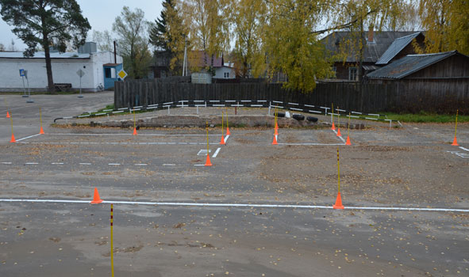
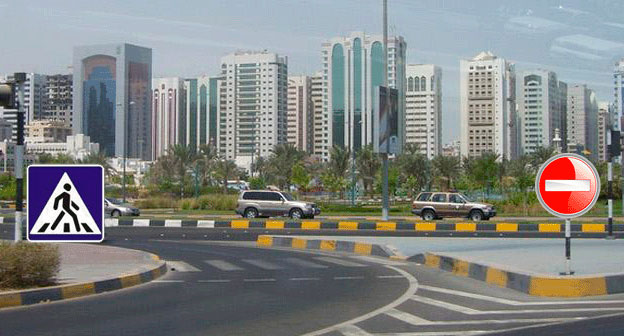
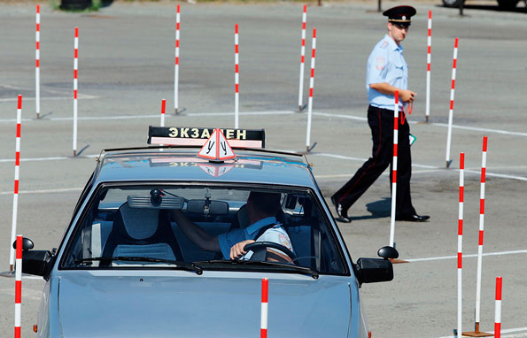

Немного о себе
Мы – тандем профессиональных автоинструкторов
Кондрашовы Александр и Наталья
- профессиональный подход к обучению;
- водительский стаж - 22 года;
- опыт работы автоинструктором - 9 лет
- два высших образования: юридическое и педагогическое
- высококлассный специалист;
- водительский стаж - 15 лет;
- опыт работы автоинструктором - 11 лет;
- педагогическое высшее образование
Почему выбирают нас?
Если Вы...
- мечтаете научиться водить автомобиль, но боитесь сесть за руль;
- хотите получить навыки, позволяющие сдать экзамены в ГИБДД;
- хотите восстановить навык вождения после длительного перерыва;
- испытываете неуверенность при движении в городских условиях...
Наши преимущества
помощь при подготовке к экзаменам в ГИБДД
обучение вождению с нуля до сдачи экзамена
отработка всех экзаменационных маршрутов ГИБДД
обучение на автомобиле как с механической КПП, так и с автоматической
индивидуальный подход к каждому клиенту
Процесс обучения
Мы предлагаем Вам полный цикл обучения вождению с нуля и до сдачи экзамена в ГИБДД.
Сюда входят 3 основных этапа:
Этап 1
Освоение первоначальных навыков управления автомобилем.
Отработка на площадке основных элементов.
Этап 2
Вождение в условиях дорожного движения.
отработка всех экзаменационных маршрутов ГИБДД.
Этап 3
Сопровождение на экзамен.
Сдача экзамена в ГИБДД.
Наши автомобили
В зависимости от вашего желания, мы предлагаем Вам для обучения на выбор следующие автомобили